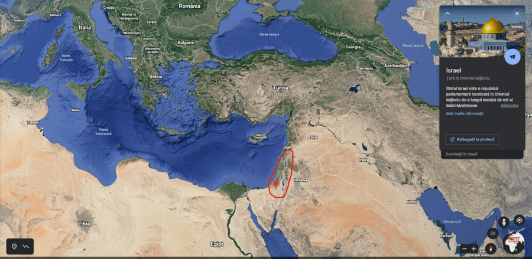
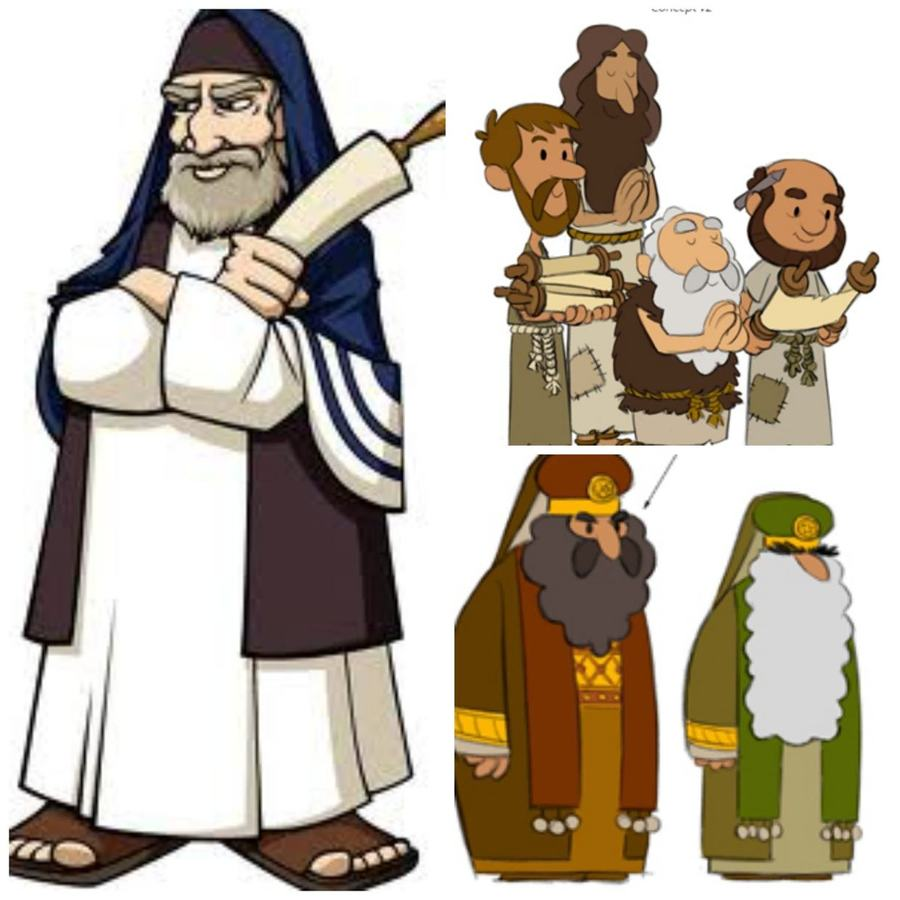
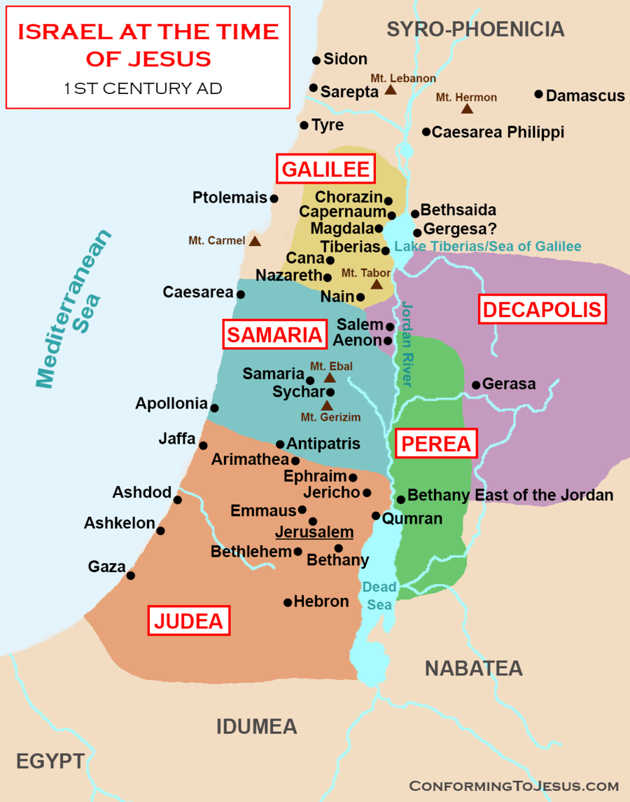
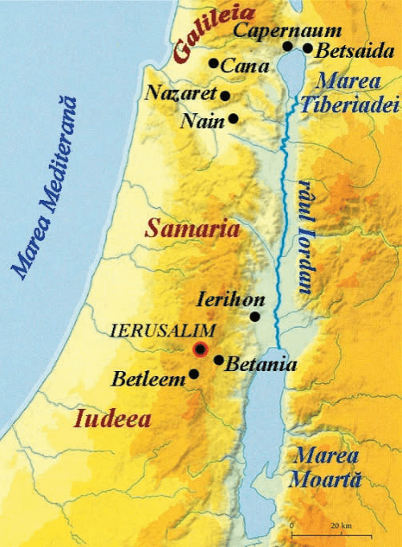
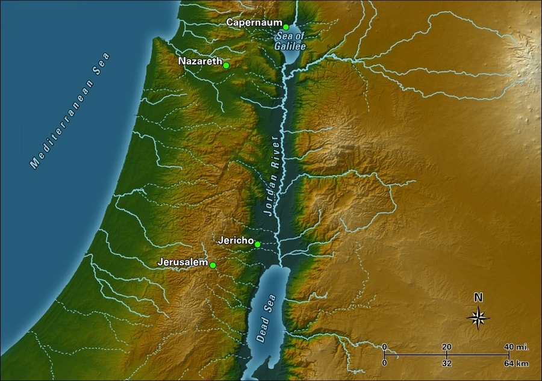
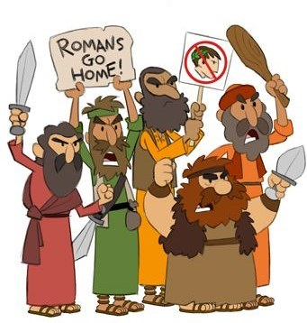
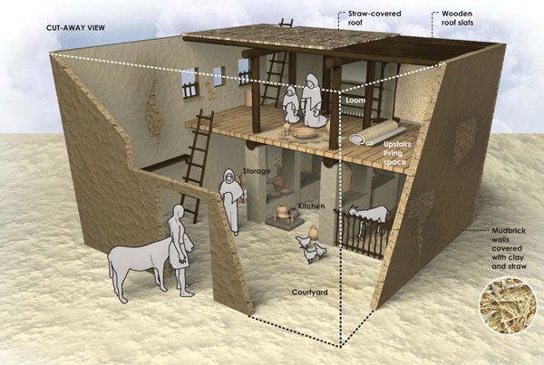
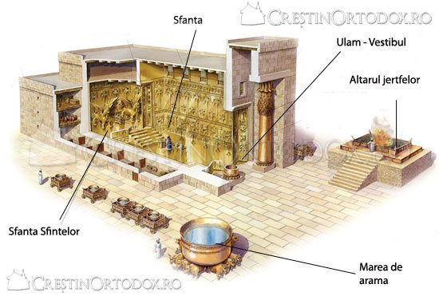
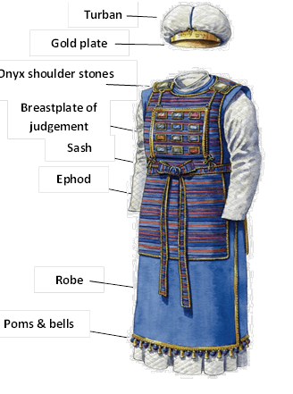
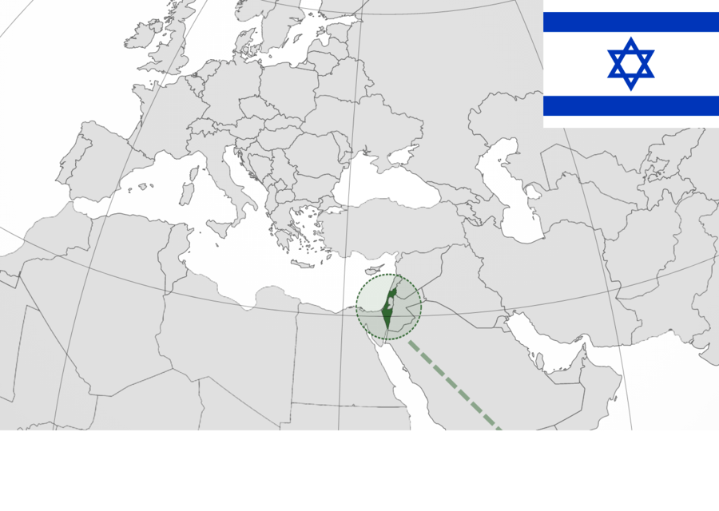

Țara Sfântă este cunoscută în Sfânta Scriptură sub mai multe nume:
Canaan – denumire veche, folosită în Vechiul Testament;
Pământul Făgăduinței – pământul promis de Dumnezeu lui
Avraam și urmașilor săi;
Țara Sfântă – numele folosit mai ales în Noul Testament
și în tradiția creștină.
Denumirea de Țara Sfântă a fost dată pentru că acest teritoriu este considerat
sacru/sfânt de toate religiile monoteiste: creștinism,
iudaism și islamism.
În această lecție vom descoperi:
unde se află Țara Sfântă pe hartă;
cum era împărțit teritoriul în vremea lui Iisus;
cum trăiau evreii de rând;
cum arăta viața religioasă a poporului evreu;
ce legătură există între Israelul biblic și
statul Israel de astăzi.
Unde se află Țara Sfântă?
Din punct de vedere geografic:
este situată în Orientul Apropiat;
se află la intersecția dintre Africa, Asia și Europa;
astăzi corespunde în mare parte
statului modern Israel și teritoriilor învecinate.

Localizarea Israelului în Orientul Mijlociu (Google Maps)
Dicționar 📚
iudaism – religia poporului evreu; mai este numit și
mozaism.
islamism – religia musulmanilor, întemeiată de profetul
Mahomed în secolul al VII-lea.
monoteist – care crede într-un
singur Dumnezeu.
Poporul evreu și Mântuitorul Hristos
În Țara Sfântă au trăit de-a lungul timpului numeroase
persoane sfinte și s-au petrecut evenimente importante
atât în Vechiul Testament, cât și în
Noul Testament.

Preoți, farisei și învățători ai Legii – reprezentare stilizată
Locuitorii acestui pământ se numesc
evrei sau iudei.
Mântuitorul Iisus Hristos S-a născut în mijlocul acestui
popor și a trăit pe aceste meleaguri.
El este Cel care a marcat pentru totdeauna
istoria și identitatea Țării Sfinte.
Eu sunt Calea, Adevărul și Viața.
Ioan 14, 6
Împărțirea Țării Sfinte în vremea lui Iisus
În vremea Mântuitorului Hristos, teritoriul Israelului era împărțit în mai multe
regiuni:
Galileea – la nord; zonă mai bogată în vegetație, cu
multe sate de pescari și agricultori;
Samaria – în centru; locuită de
samariteni, un popor înrudit cu evreii, dar cu unele
diferențe religioase;
Iudeea – la sud; aici se afla
Ierusalimul, capitala religioasă și politică;
Decapolis – o regiune aflată
dincolo de Iordan, la nord-est, cu zece orașe cu influență
greco-romană;
Perea – teritoriu de la sud-est de Iordan.

Împărțirea Israelului în secolul I d.Hr.: Galileea, Samaria, Iudeea, Decapolis, Perea
Despre Iisus știm că:
S-a născut în Betleem (Iudeea);
Și-a petrecut copilăria în Nazaret (Galileea);
De aceea a fost numit și
Galileeanul sau
Nazarineanul.
Activitatea Sa publică s-a desfășurat în special în
Galileea, în locuri precum:
Cana Galileii – unde a săvârșit prima minune;
Capernaum – oraș în care a predicat și a vindecat
bolnavi;
Muntele Tabor – locul Schimbării la Față;
Lacul Ghenizaret, numit și
Marea Tiberiadei – locul unde i-a chemat pe primii
Apostoli.

Galileea, Samaria și Iudeea – principalele regiuni ale Israelului în vremea
Mântuitorului
Râul Iordan și Marea Moartă
Un element foarte important al geografiei Țării Sfinte este
râul Iordan.
Izvorăște în nordul țării și curge spre sud;
Străbate Lacul Ghenizaret;
Se varsă în Marea Moartă.
În apa Iordanului a avut loc Botezul Domnului, săvârșit de
Sfântul Ioan Botezătorul.

Harta reliefului Țării Sfinte
Marea Moartă este:
un lac sărat, nu o mare propriu-zisă;
are o concentrație foarte mare de sare, ceea ce face înotul normal aproape imposibil;
se află cu aproximativ 427 m sub nivelul mării – unul dintre cele mai
joase puncte de pe suprafața Pământului.
Viața de zi cu zi a evreilor
La Nașterea Domnului, Țara Sfântă se afla sub
ocupația Imperiului Roman.
Evreii aveau încă un rege autohton, dar acesta era supus
Romei;
Populația de rând trăia destul de greu, muncind pentru
traiul zilnic și pentru
taxele impuse de romani.

Evrei zeloți protestând față de ocupația romană – reprezentare stilizată
Ocupațiile de bază ale evreilor erau:
cultivarea pământului (agricultură);
creșterea animalelor (păstorit);
pescuitul (mai ales în Galileea);
dulgheritul;
olăritul;
țesutul;
comerțul.
Casele oamenilor obișnuiți erau:
construite din lut sau
lemn;
lipite cu ipsos;
cu acoperișuri plate și ușor înclinate.
Acoperișurile erau folosite pentru:
uscatul inului și al
smochinelor;
odihnă, mai ales seara;
rugăciune și reculegere.

Reconstituire a unei case evreiești din secolul I: curte, bucătărie, spațiu de locuit
și acoperiș din paie
Viața religioasă a evreilor
Viața religioasă a poporului evreu se baza pe
Legea lui Moise.
Centrul principal al cultului era
Templul din Ierusalim;
În fiecare oraș sau sat exista câte o
sinagogă, adică locul în care evreii se adunau pentru
rugăciune și pentru citirea Scripturilor;
La Templu slujeau preoții, ajutați de
leviți.

Templul din Ierusalim – Sfânta, Sfânta Sfintelor, Ulamul, altarul jertfelor și Marea
de aramă
Conducerea religioasă era organizată astfel:
arhiereul – mai marele preoților;
Sinedriul – organismul suprem de judecată al evreilor,
format din bătrâni, preoți și cărturari.

Veșmintele Marelui Preot: efodul, pieptarul judecății, pietrele de onix, tunica, brâul
și turbanul cu placă de aur
Sărbători importante la evrei
Cele mai importante sărbători religioase ale evreilor erau:
Paștile – în amintirea trecerii minunate prin
Marea Roșie și a eliberării din
robia Egiptului;
Cincizecimea – în amintirea primirii
Tablelor Legii pe muntele Sinai;
Sărbătoarea Corturilor – amintea de perioada în care
evreii au locuit în corturi în drumul lor spre Canaan.
În aceste zile:
evreii urcau la Templul din Ierusalim;
se rugau împreună;
aduceau jertfe lui Dumnezeu.
Sărbătoarea săptămânală a evreilor era
Sabatul (Sâmbăta) – ziua a șaptea, zi de
odihnă și rugăciune în cinstea lui Dumnezeu, Creatorul
lumii.
Iisus Hristos a respectat sărbătorile vechi evreiești, dar
unele dintre ele primesc în Noul Testament o
semnificație nouă, legată de persoana și lucrarea Sa.
Israelul de atunci și Israelul de astăzi
Astăzi, pe teritoriul vechii Țări Sfinte se află
statul Israel, organizat ca
republică parlamentară.
Are o populație de aproximativ 9 milioane de locuitori;
Majoritatea, peste 6,7 milioane, sunt
evrei;
Un alt grup important este format din
cetățeni arabi, atât
musulmani, cât și
creștini.

Localizarea Israelului pe hartă: între Europa, Africa și Orientul Mijlociu
Același teritoriu este considerat sfânt de:
creștini – pentru că aici a trăit și a înviat Hristos;
evrei – pentru că este Pământul Făgăduinței;
musulmani – pentru că aici se află locuri importante și
pentru islam.
Recapitulare ✏️
Țara Sfântă este un spațiu mic, dar cu o importanță uriașă pentru istoria mântuirii.
Aici:
S-au împlinit promisiunile lui Dumnezeu din
Vechiul Testament;
S-a născut, a trăit, a murit și a înviat
Mântuitorul Iisus Hristos;
A trăit și a suferit poporul evreu, poporul ales;
S-au format tradițiile religioase care influențează și astăzi întreaga lume.
Când citim Evanghelia sau Vechiul Testament, este util să ne imaginăm
locurile reale în care au trăit acești oameni. Astfel,
Țara Sfântă nu rămâne doar un nume pe hartă, ci devine un spațiu viu, în care Dumnezeu
S-a arătat oamenilor.